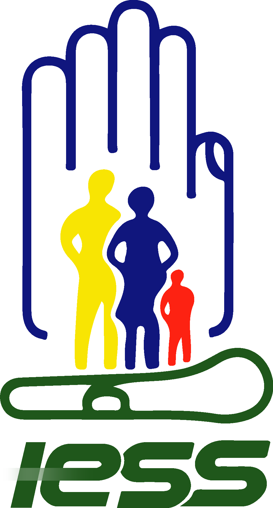

Seguridad Industrial
Equipos de
Protección
Personal
La primera línea de defensa entre el trabajador y los riesgos del entorno laboral. Conoce qué son, cómo usarlos y por qué son obligatorios.
Desplázate
Seguridad Industrial
La primera línea de defensa entre el trabajador y los riesgos del entorno laboral. Conoce qué son, cómo usarlos y por qué son obligatorios.
DesplázateDefinición
Cualquier equipo destinado a ser llevado por el trabajador para protegerle de riesgos que puedan amenazar su seguridad.
Los Equipos de Protección Personal (EPP) son dispositivos, accesorios o indumentaria diseñados específicamente para proteger al trabajador de riesgos físicos, químicos, biológicos, ergonómicos y de seguridad en el entorno laboral.
A diferencia de las medidas de protección colectiva, el EPP actúa directamente sobre el individuo. Su uso es obligatorio cuando los riesgos no pueden eliminarse por otros medios.
Son el último recurso dentro de la jerarquía de controles de riesgos: primero se eliminan los peligros, luego se controlan, y si no es posible, se protege al trabajador.
Tipos de EPP
Cada parte del cuerpo requiere un equipo específico diseñado para los riesgos de cada zona.

🪖 Protección de la cabeza
Protege de impactos, golpes por objetos caídos y riesgos eléctricos en obras y zonas industriales.

🥽 Protección ocular y facial
Resguarda ojos y cara de proyecciones, salpicaduras químicas, radiaciones UV y partículas suspendidas.

😷 Protección respiratoria
Filtra el aire inhalado para evitar la exposición a gases tóxicos, polvos, humos y agentes biológicos.

🧤 Protección de manos
Protege de cortes, abrasiones, sustancias químicas, calor, frío extremo y riesgos eléctricos.

🥾 Protección de pies
Previene aplastamientos, pinchazos, resbalones y exposición a sustancias peligrosas en el suelo.

🦺 Protección contra caídas
Indispensable en trabajos en altura. Detiene o amortigua caídas libres que ponen en riesgo la vida.
¿Por qué importa?
Los accidentes laborales tienen consecuencias devastadoras. El uso correcto del EPP reduce drásticamente estos riesgos.
60%
de los accidentes laborales graves podrían evitarse con el uso adecuado del EPP correcto.
2,3M
de trabajadores mueren cada año en el mundo por accidentes o enfermedades relacionadas al trabajo (OIT).
340M
de accidentes laborales no fatales ocurren anualmente, muchos de los cuales generan discapacidades permanentes.
Sin EPP adecuado…
Una salpicadura química puede causar ceguera permanente. Una caída de 2 metros sin arnés puede ser fatal. Un polvo fino inhalado durante años produce silicosis o cáncer pulmonar.
Con EPP correctamente usado…
El riesgo se reduce hasta en un 85%. El trabajador puede realizar sus tareas con confianza, y la empresa cumple con su deber legal de garantizar un entorno seguro.
Marco legal
El uso del EPP no es opcional. Está regulado por normas nacionales e internacionales de obligatorio cumplimiento.
Sistema de Gestión de Seguridad y Salud en el Trabajo
Estándar internacional que establece los requisitos para gestionar los riesgos laborales, incluyendo la provisión y control de EPP.
Instituto Nacional de Seguridad y Salud Ocupacional (EE.UU.)
Certifica y evalúa equipos respiratorios y otros EPP. Sus clasificaciones (N95, P100, etc.) son referencia global.
Normas Europeas y marcado CE
Todo EPP vendido en Europa debe llevar marcado CE. Las normas EN certifican que el equipo ha superado pruebas de resistencia y protección.
Convenios de la Organización Internacional del Trabajo
Los Convenios 155 y 187 obligan a los países miembros a garantizar condiciones seguras de trabajo, incluyendo la provisión gratuita de EPP al trabajador.
Buenas prácticas
Tener el equipo no es suficiente. Un EPP mal usado puede dar una falsa sensación de seguridad y no proteger en absoluto.
Elegir el EPP correcto
Identificar el riesgo específico y seleccionar el equipo certificado para ese riesgo. No todos los guantes protegen de lo mismo.
Verificar antes de usar
Revisar que el equipo no esté dañado, vencido o deteriorado. Un casco con grietas no protege igual que uno en buen estado.
Ajuste correcto
El EPP debe ajustarse bien al cuerpo del trabajador. Un arnés mal ajustado puede empeorar una caída. Los guantes demasiado grandes reducen la destreza.
Usarlo durante toda la tarea
Quitarse el EPP aunque sea "un momento" es cuando ocurren los accidentes. La protección debe mantenerse durante toda la exposición al riesgo.
Mantenimiento y almacenamiento
Limpiar, revisar y guardar correctamente el EPP prolonga su vida útil y garantiza que funcionará cuando más lo necesites.
Reemplazarlo a tiempo
Todo EPP tiene una vida útil. Las mascarillas, guantes y arneses deben reemplazarse según las indicaciones del fabricante o ante cualquier señal de daño.